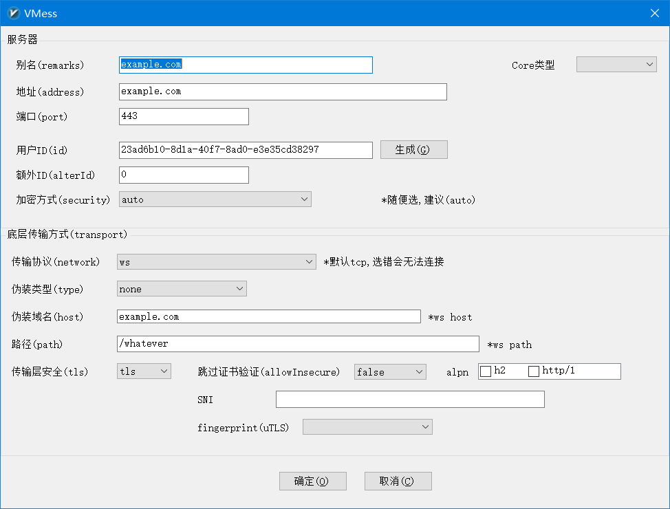

V2Ray + WebSocket + TLS + CloudFlare配置代理
1. 使用docker安装 V2Ray
- 准备工作
- 安装docker
- 找个目录, cd进去, 新建
config.json文件, 写入下列内容
{
"inbounds": [{
"port": 10086,
// 因为还要用 Nginx 反代，这里直接监听本地就行
// "listen": "127.0.0.1",
"protocol": "vmess",
"settings": {
"clients": [
{
// 用户 UUID，自己随机弄一个
"id": "23ad6b10-8d1a-40f7-8ad0-e3e35cd38297",
"level": 1,
"alterId": 64
}
]
},
"streamSettings": {
// 指定底层传输方式为 WebSocket
"network": "ws",
"wsSettings": {
// 在哪个路径上提供 WS 服务，可自定义
"path": "/whatever"
}
}
}],
"outbounds": [{
"protocol": "freedom",
"settings": {}
},{
"protocol": "blackhole",
"settings": {},
"tag": "blocked"
}],
"routing": {
"rules": [
{
// 默认规则，禁止访问服务器内网
"type": "field",
"ip": ["geoip:private"],
"outboundTag": "blocked"
}
]
}
}
2. 运行 V2Ray
在1中的文件夹内运行下列命令
docker run -d --name v2ray -v ${PWD}/config.json:/etc/v2ray/config.json -p 10086:10086 v2fly/v2fly-core:v5.4.1 run -c /etc/v2ray/config.json
3. 配置 Nginx
在nginx的配置中添加下列内容
location /whatever {
proxy_redirect off;
proxy_http_version 1.1;
proxy_set_header Upgrade $http_upgrade;
proxy_set_header Connection "upgrade";
proxy_set_header Host $http_host;
proxy_set_header X-Real-IP $remote_addr;
proxy_set_header X-Forwarded-For $proxy_add_x_forwarded_for;
set $is_v2ray 0;
if ($http_upgrade = "websocket") {
set $is_v2ray 1;
}
if ($is_v2ray = 1) {
# 仅当请求为 WebSocket 时才反代到 V2Ray
proxy_pass http://127.0.0.1:10086;
}
if ($is_v2ray = 0) {
# 否则显示正常网页
rewrite ^/(.*)$ /mask-page last;
}
}
完成后测试
curl -i http://127.0.0.1:10086/whatever
# 400 Bad Request 则为配置成功
4. 配置 CloudFlare
使用cloudflare dns, 并开启dns proxy
完成后测试
# 安装wscat, `sudo npm install -g wscat`
wscat -c wss://example.com/whatever
# Connected (press CTRL+C to quit) 则为成功
5. 配置 V2RayN 客户端

reference
Updated: 2023-09-02 17:23
Created: 2023-09-02 15:00